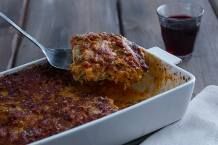

Lasagna

Le lasagne alla Bolognese sono un'istituzione, il piatto tipico della domenica. Questa pietanza ricca e saporita è originaria dell'Emilia e, nello specifico, della città di Bologna. Le lasagne però sono conosciute, apprezzate, fatte, rifatte per le feste e non solo, assaggiate e condivise non solo in tutta Italia, ma anche all'estero proprio come piatto simbolo italiano. Strati di pasta verde all'uovo, conditi con il classico ragù della tradizione, besciamella e formaggio grattugiato. Ovviamente delle lasagne non mancano numerose e prelibate varianti come quella zucca e salsiccia , ai funghi, le montanare, perfette per i menu autunnali, quella ai carciofi per la stagione invernale e primaverile, oppure quella bianca, senza pomodoro. Dalla preparazione agli ingredienti, questa ricetta è la quintessenza della "ricchezza" della cucina tradizionale bolognese, celebre anche per molte altre ricette di pasta fresca e non solo, basti pensare allo gnocco fritto. Non vi resta che prepararla e gustarla in compagnia della vostra famiglia per un giorno davvero speciale!
Ingredienti
Ingredienti per la pasta sfoglia
- Semola di grano duro rimacinata 350g
- Farina 00 150g
- Spinaci 250g
- Uova 2
- Tuorli 3
Ingredienti per il ragù
- Carne bovina (trita di manzo, macinata grossa e mista) 300g
- Pancetta 150g
- Carote 50g
- Cipolle dorate 50g
- Vino rosso 100g
- Passata di pomodoro 300g
- Brodo vegetale q.b.
- Olio extravergine d'oliva 1 cucchiaio
- Sale fino q.b.
- Pepe nero q.b.
Ingredienti per la besciamella
- Burro 70g
- Farina 00 70g
- Latte intero 1l
- Sale fino q.b.
- Noce moscata q.b.
Ingredienti per condire
- Burro q.b.
- Parmigiano Reggiano DOP 270g
Preparazione
- Per preparare le lasagne alla bolognese, iniziate dal ragù. Preparate il brodo vegetale che dovrete tenere in caldo. Poi prendete la pancetta, tagliatela prima a striscioline. Con un coltello o una mezzaluna sminuzzatela per bene. A parte preparate un trito fine con carote, cipolle, sedano e tenetelo da parte.
- In una casseruola versate un filo d'olio e la pancetta. Sgranatela bene con un mestolo e lasciatela rosolare per alcuni minuti. Aggiungete poi il trito di verdure e fate insaporire per 5-6 minuti. Aggiungete poi la carne macinata. Mescolate e alzate la fiamma. Lasciate rosolare la carne senza fretta, dovrà essere ben rosolata per sigillare i succhi e risultare morbida non stopposa.
- Sfumate con il vino rosso, poi aspettate che sia completamente evaporato e aggiungete la passata di pomodoro. Mescolate, il ragù deve cuocere due ore. Quando ha ripreso il bollore potete aggiungete poco brodo caldo, uno o due mestoli. Poi fate andare il ragù per un paio d'ore almeno.
- Dovrete cuocere con il coperchio, senza chiudere del tutto. Controllate e mescolate di tanto in tanto, al bisogno aggiungete altro brodo e lasciate cuocere per il tempo indicato. Passate adesso alla pasta. Come prima cosa versate gli spinaci in un tegame, aggiungete poca acqua, coprite con un coperchio e lasciate cuocere fino a che non saranno appassiti, in totale ci vorranno 5-6 minuti. A questo punto scolateli, lasciateli intiepidire e strizzateli bene.
- Trasferiteli in un mixer e frullateli fino ad ottenere una purea. Dovrete ricavarne 100 g. Adesso su una spianatoia versate la semola e la farina 00, aggiungete gli spinaci e create una forma a fontana. Unite le uova leggermente sbattute e i tuorli, sempre sbattuti. Iniziate ad impastare il tutto partendo dal centro, in questo modo le uova non scivoleranno fuori dalla fontana. Impastate bene fino ad ottenere un panetto omogeneo.
- Avvolgetelo nella pellicola e lasciate riposare per 30 minuti a temperatura ambiente. Nel frattempo preparate la besciamella, ricordandovi sempre di controllare il ragù. In un pentolino mettete a scaldare il latte, senza farlo bollire. In un altro tegame versate il burro e lasciatelo fondere.
- Aggiungete la farina in una volta sola e cuocete per pochi minuti fino ad ottenere un roux dorato. Versate quindi il latte caldo in 3 volte, mescolando bene. Aggiungete il sale e aromatizzate con la noce moscata. Continuate a mescolare fino ad ottenere una besciamella cremosa. Trasferite in una ciotolina, coprite con pellicola a contatto e tenete da parte. Non appena saranno trascorsi i 30 minuti riprendete il panetto di pasta e prelevatene un pezzo. Coprite la pasta restante con la pellicola per non farla seccare.
- Aiutandovi con un po' di semola appiattitelo leggermente sulla spianatoia in modo da formare un rettangolo e stendete la pasta nella macchina. Iniziate da uno spessore più largo, poi ripiegate la passa su se stessa e ripassatela. Quando sentite che è troppo umida spolverizzate con un po' di semola. Riducete man mano lo spessore fino ad ottenere una sfoglia spessa poco più di mezzo mm. Trasferitela su una spianatoia e tagliate dei rettangoli grandi 30x20 cm. Proseguite in questo modo fino a terminare l'impasto e nel frattempo mettete sul fuoco una pentola colma d'acqua e salatela. Quando inizierà a bollire mmergete una sfoglia alla volta, aspettate 30-40 secondi e aiutandovi con una schiumarola scolatela. Trasferitela su un vassoio con un canovaccio e tamponate per togliere l'acqua in eccesso. Proseguite in questo modo affiancando le sfoglie cotte, senza sovrapporle. Non appena anche il ragù sarà pronto aggiustate di sale e pepe e procedete alla composizione delle lasagne.
- Prendete una teglia da lasagna grande 30x20 cm e imburrate il fondo. Aggiungete uno strato sottile di besciamella e uno di ragù. Posizionate quindi la prima sfoglia, aggiungete uno strato di besciamella e uno di ragù. Aggiungete il parmigiano grattugiato e posizionate sopra un'altra sfoglia di pasta.
- Aggiungete ancora uno strato di besciamella e uno di ragù, unite il formaggio grattugiato e proseguite così fino a realizzare 5 strati. Dopo aver posizionato l'ultima sfoglia aggiungete il ragù in modo da coprire interamente la pasta. Spolverizzate con il formaggio grattugiato, aggiungete dei ciuffetti di burro e cuocete in forno statico preriscaldato a 170° per 40 minuti. Le lasagne alla bolognese sono pronte per essere servite.